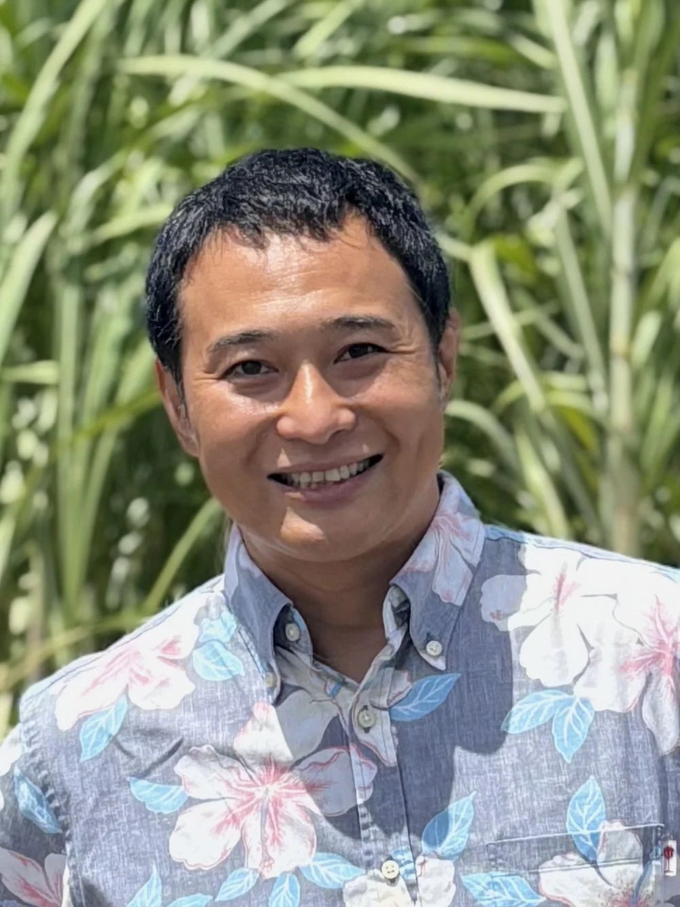

プレスリリース作成支援
情報整理から、ニュースになるポイントを見つけ、タイトル・見出し・本文まで一緒に組み立てます。
- ニュース性の発掘
- 構成・タイトル・本文
- 写真・素材のアドバイス
- メディア視点でブラッシュアップ
沖縄県内の中小企業・小規模事業者のための、オンラインでの広報・PRサポート。 プレスリリース作成、PR TIMES配信、沖縄県内外のメディアへのPR、広報相談まで。
沖縄の広報相談室は、沖縄県内の中小企業・小規模事業者向けに、 「何を発信すればいいか」から一緒に考え、広報の基礎から実務までオンラインで支援する広報パートナーです。
「広報をやりたい」けれど、社内に経験者がいない。そんな事業者のための相談窓口です。
新商品を出したけど、どう発信すればいいかわからない。
プレスリリースを書いてみたい。でも、何を書けばいい？
PR TIMESで配信してみたいけれど、自分だけでは不安。
沖縄のメディアに情報を届けたい。
沖縄県外のメディアにも知ってもらいたい。
そもそも、これは広報のネタになるの？
広報担当者を雇うほどではないけれど、相談相手がほしい。
SNSだけでなく、検索からも見つけてもらいたい。
広報について基礎から学びたい。
文章を書くことだけが広報ではありません。「何を」「誰に」「いつ」「どう伝えるか」から考えます。
情報整理から、ニュースになるポイントを見つけ、タイトル・見出し・本文まで一緒に組み立てます。
初めてでも進められるよう、原稿準備から配信内容、タイミング、配信後の活用まで相談できます。
テレビ、ラジオ、新聞、Web、地域情報メディアなど、情報に合った届け方を考えます。
沖縄だからこそニュースになる視点も含め、全国・専門メディアへの情報発信を考えます。
「新商品がないから広報できない」と思っている方も。日々の事業の中から発信テーマを探します。
経営者・担当者向けに、広報とは何か、ニュースになる情報とは何かを実務目線でわかりやすく伝えます。
文章を作る前に、ニュースになるポイントを一緒に整理します。
生活情報メディア10年、企業広報、大手家電メーカー広報、企業の広報支援10年の経験を活かします。
那覇だけでなく、沖縄県内各地域の事業者が相談しやすいオンライン中心の支援です。
必要に応じて、次の発信テーマや情報発信の進め方まで相談できます。

地域情報メディアで10年間、情報を「届ける側」の現場を経験しました。
その中で企業のコーポレート広報を経て、大ヒット家電メーカーの広報・販促担当に。その後も中小企業の広報支援に10年間携わってきました。
メディアはどんな情報を取り上げたいのか。企業は何を伝えたいのか。その間をどうつなぐのか。
この両方の視点をもとに、沖縄の事業者が「伝えたいこと」を「届く情報」に変えていくお手伝いをします。
最初から完璧なプレスリリースを用意する必要はありません。まず、今取り組んでいることを聞かせてください。
今のお悩みを聞きます。
伝えたいことを整理。
誰に、どう届けるか。
原稿や素材を準備。
PR TIMES等で発信。
次のテーマを考える。
「こんなことを聞いてもいいの？」という内容も、まずはお気軽にどうぞ。
はい。情報整理からタイトル、構成、本文、素材の見せ方まで、必要な範囲でプレスリリース作成を支援します。
はい。PR TIMESでの配信方法、原稿準備、配信内容、タイミング、配信後の活用について相談できます。PR TIMESの利用料金や契約条件は公式情報をご確認ください。
大丈夫です。初めての方にも、何を準備し、どのような順番で進めればよいかをわかりやすく説明します。
はい。沖縄県内のテレビ、ラジオ、新聞、Webメディア、地域情報メディアなど、情報の内容に応じた届け方を一緒に考えます。掲載や放送を保証するサービスではありません。
はい。沖縄という地域性や事業の特徴を整理し、全国メディアや専門メディアなど、届けたい相手に合わせたPR方法を相談できます。
新商品、新サービス、新店舗、イベント、地域との取り組み、新しい技術、コラボレーション、周年、新しい挑戦などが考えられます。大切なのは、事業者側の「言いたいこと」だけでなく、社会や生活者にとっての新しさ・意味を整理することです。
もちろんです。商品以外にも、地域との取り組み、採用、働き方、イベント、企業の挑戦など、広報につながるテーマを一緒に探します。
はい。広報担当者を置くほどではない中小企業・小規模事業者、個人事業主の方も対象です。
はい。個人事業主、店舗、地域事業者などもご相談いただけます。
はい。オンラインを中心に、沖縄県内のどこからでも相談しやすい形で支援します。
大丈夫です。「広報って何？」「何を発信すればいい？」という段階から、専門用語をできるだけ使わずに一緒に整理します。
はい。まずは現在の取り組みやお悩みをお聞かせください。具体的な支援内容は、その後に一緒に考えます。
「プレスリリースを書きたい」「何を発信すればいいかわからない」「広報担当者がいない」そんな段階でも大丈夫です。
今取り組んでいること、これから始めたいこと、困っていること。まとまっていなくても構いません。まずは聞かせてください。